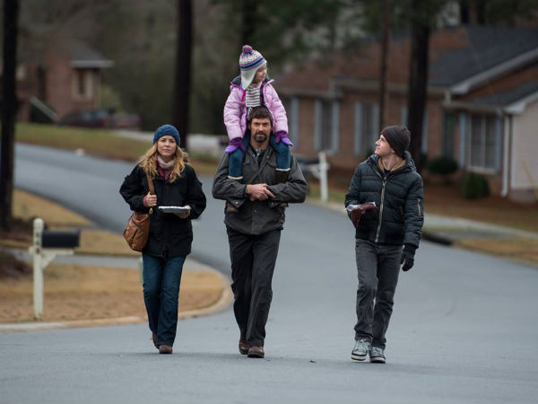

Glavne uloge:
Kao što je rečeno glavni lik filma je Keller Dover otac jedne od otetih devojčica.
Takodje drugi glavni lik filma je Detektiv Loki koji radi na slučaju otetih devojčica.
Ostale uloge:
Žena Keller Dovera i majka jedne od otetih devojčica.
Najbolji prijatelj Keller Dovera i otac jedne od otetih devojčica.
Žena Franklin Bircha i majka jedne od otetih devojčica.
Osumljičen za otmicu devojčica , na kraju se ispostavlja da je i on bio otet 15 godina ranije.
Ćerka Keller Dovera i jedna od otetih devojčica.
Ćerka Franklin Bircha i jedna od otetih devojčica.
Otmičarka koja je otela devojčice i Alex Jonesa 15 godina ranije.